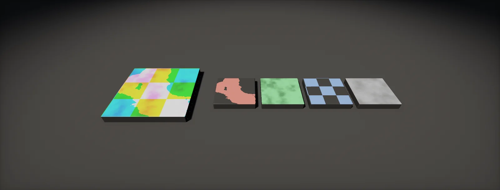

Texture Packing and Import Settings
The import settings that decide how every texture looks and what it costs: sRGB or data, the right compression per map type, packing layouts for HDRP, URP and Unreal, mobile formats, mipmaps and anisotropy, and tools that set it all automatically.

Settings per map type
Every texture you import needs three decisions: is it colour or data (the sRGB flag), which compression format, and how large it may be. They depend on the kind of map, not on the asset, so a studio writes them down once:
| Map | sRGB | PC / console | Mobile | Notes |
|---|---|---|---|---|
| Base colour | on | BC7 (or BC1) | ASTC 6×6 | BC1 is half the size but bands smooth gradients. |
| Base colour + alpha | on | BC7 (or BC3) | ASTC 4×4–6×6 | Alpha-tested: enable Mip Maps Preserve Coverage. |
| Normal map | off | BC5 | ASTC 4×4–5×5 | Unity: Texture Type Normal map. Two channels; Z rebuilt in the shader. |
| Packed mask (MS, ORM) | off | BC7 | ASTC 5×5–6×6 | Uncorrelated channels: avoid BC1/BC3. |
| Single mask, roughness, height | off | BC4 | ASTC 6×6 (or R8) | Displacement height: R16 uncompressed. |
| Emissive | on | BC7, BC6H if HDR | ASTC 6×6 / ASTC HDR | Intensity usually comes from the material, so 8 bit is fine. |
| HDRI, lightmap | off (HDR) | BC6H | ASTC HDR, RGB9E5 | Set by the engine for lightmaps. |
| UI, pixel art | on | uncompressed or BC7 | ASTC 4×4 | No mipmaps for screen-space UI; Point filter for pixel art. |
The format decides the memory. With mipmaps, a texture costs a third more than its top level (what a texture costs):
sRGB flag
The GPU decodes colour textures for free when it samples them, if the texture is flagged as sRGB. Everything else is data: roughness, metallic, AO, masks, height and normals hold numbers that must arrive unchanged. Flag a roughness map as sRGB and every value is pushed toward 0 when the shader reads it:
In Unity the checkbox is sRGB (Color Texture) in the importer; Texture Type Normal map turns it off by itself. In Unreal it is sRGB on the texture, and the Masks (no sRGB) compression setting forces it off. The mistake is invisible in the texture preview, so check it in the material: a rough surface that looks glossy is the usual sign.
Channel packing layouts
Roughness, metallic and AO are each a single number per texel. Storing each in its own texture wastes memory and costs a sample per map. puts up to four greyscale maps into the R, G, B and A of one texture, read with swizzles (float4 and swizzles). Two rules decide whether a packed map works: compress it with a format that keeps the channels apart (BC7, not BC1; alpha is always stored separately, so A is the best slot for the most important map), and match the layout the shader expects. Each engine's standard shader has its own, and Unity stores smoothness where Unreal conventions store roughness: smoothness = 1 − roughness, so moving maps between engines means inverting that channel, not just moving it:
HDRP also has a detail map with its own layout: desaturated albedo in R, the detail normal's Y in G, smoothness in B and the normal's X in A. For your own Shader Graphs you may pack however you like, but stick to one convention per project and name the texture after it (_MS, _ORM).
Compression for packed masks
Block compression stores each 4 × 4 block of texels as a few endpoint colours and short indices (block compression). BC1 and the colour part of BC3 put all four palette colours on one straight line through RGB space. That suits a photo, where red, green and blue rise and fall together. It does not suit a mask map, where metallic, AO and roughness have nothing to do with each other. Compare one block of two channels:
BC4 and BC5 compress each channel on its own, which is why they suit single masks and normal maps. BC7 chooses per block between several modes, including separate partitions and an independently coded channel, so it keeps uncorrelated channels apart at the same 1 byte per texel as BC3. On mobile, ASTC works the same way at any block size.
Mobile formats and platform overrides
Phones use (and ETC2 on old devices). ASTC always stores a block in 128 bits, but the block size is a choice, so its bitrate is a slider:
In Unity, each platform has its own tab in the importer (Override for Android, iOS), and the Android player settings choose the fallback format. Pick per map type, as in the table: normal maps 4 × 4 or 5 × 5, colour and masks 6 × 6, large distant textures 8 × 8.
Max size, mipmaps and anisotropy
Three more importer settings change how a texture looks at runtime. Max Size scales the texture down on import; keep sources large and set the shipping size here, per platform. Mipmaps belong on every texture used in the 3D scene; turn on Mip Streaming for large ones, so only the mips the camera needs are loaded (streaming). For alpha-tested textures enable Mip Maps Preserve Coverage so foliage keeps its density (alpha test).
Aniso Level fixes blur at grazing angles. A pixel looking at a floor at an angle covers a long, thin footprint on the texture; plain trilinear filtering picks the mip for the long side and blurs the short one. Anisotropic filtering takes several samples along the long side instead:
Use 4 to 8 for floors, roads and terrain, 1 for objects mostly seen face-on and for UI. HDRP and URP can force a minimum in Project Settings > Quality > Anisotropic Textures.
Import automation
Clicking through import settings for every texture is slow and error-prone. Two tools make the rules automatic:
- Naming suffixes. A short, fixed suffix per map type:
_BCbase colour,_Nnormal,_MSHDRP mask,_ORMUnreal mask,_Rroughness,_Hheight,_Eemissive. The painting tool's export preset writes them. - An import script. Unity runs an AssetPostprocessor before every texture import; Unreal runs import scripts or Interchange pipelines. The script reads the suffix and applies the table above. The implementation chapter has a complete one.
Unity's Preset Manager (with filters on the file name) is the no-code alternative for simple rules. Whatever you use, apply it only to new textures, so artists can still override a setting by hand later.
Channel packer tool
Packing usually happens on export from the painting tool. An in-engine packer is still useful: for scanned materials that arrive as separate maps, for converting between engine layouts, or for inverting roughness into smoothness without a round trip. On the GPU it is a few lines of compute shader, one thread per texel, reading four sources and writing four channels:
[numthreads(8, 8, 1)]
void Pack(uint3 id : SV_DispatchThreadID)
{
if (any(id.xy >= _Size)) return;
float2 uv = (id.xy + 0.5) / _Size;
float4 o;
o.r = Pick(_SrcR.SampleLevel(sampler_linear_clamp, uv, 0), _Channel.r); // e.g. metallic.r
o.g = Pick(_SrcG.SampleLevel(sampler_linear_clamp, uv, 0), _Channel.g); // AO.r
o.b = Pick(_SrcB.SampleLevel(sampler_linear_clamp, uv, 0), _Channel.b); // detail mask
o.a = Pick(_SrcA.SampleLevel(sampler_linear_clamp, uv, 0), _Channel.a); // roughness.r
_Out[id.xy] = lerp(o, 1.0 - o, _Invert); // invert A: smoothness
}
The full tool (an editor window that picks the sources, dispatches this shader, saves a PNG and imports it with the right settings) is in the next chapter. It uses everything from Compute Shaders: a RenderTexture with random write, a dispatch of ⌈size / 8⌉ groups, and a readback, here once rather than every frame.
Build it in Unity HDRP
Two editor tools: an AssetPostprocessor that applies the per-map-type table to every new texture from its file name, and a channel packer that runs the compute shader from the previous chapter. Written for Unity 6 with HDRP 17; Unity 2022 LTS works the same apart from a few renamed menu entries.
- Create an
Editorfolder (anyAssets/…/Editor/) and put both C# files in it. Editor scripts are not included in builds. - Change
Folderin the postprocessor to where your art lives. It only acts on the first import of a texture (importSettingsMissing), so later manual changes are kept. To apply it to existing textures, delete their.metafiles or reimport after removing that check. - Import a texture named
Crate_N.png: it arrives as a normal map with BC5 on PC and ASTC 5×5 on mobile.Crate_MS.pngarrives with sRGB off and BC7. - Create the compute shader
ChannelPack(Create > Shader > Compute Shader) with the code below. Open Tools > Atlas > Channel Packer; the window finds the compute shader by name. - Assign up to four source textures, choose which channel to take from each, tick Invert for roughness into smoothness, and set a fallback value for empty slots (AO 1, detail mask 1). Click Pack and choose where to save the PNG; it is imported with sRGB off.
- Source masks must themselves be imported with sRGB off, or the packer receives decoded, darker values.
#if UNITY_EDITOR
using System.IO;
using UnityEditor;
using UnityEngine;
// Applies import settings from the file-name suffix the first time a texture is imported.
public class AtlasTexturePostprocessor : AssetPostprocessor
{
const string Folder = "Assets/Art/"; // only textures under this folder
void OnPreprocessTexture()
{
if (!assetPath.StartsWith(Folder)) return;
if (!assetImporter.importSettingsMissing) return; // first import only: manual edits survive
var ti = (TextureImporter)assetImporter;
string n = Path.GetFileNameWithoutExtension(assetPath).ToUpperInvariant();
ti.mipmapEnabled = true;
ti.streamingMipmaps = true;
ti.anisoLevel = 4;
if (n.EndsWith("_N")) // normal map
{
ti.textureType = TextureImporterType.NormalMap; // also turns sRGB off
Set(ti, TextureImporterFormat.BC5, TextureImporterFormat.ASTC_5x5);
}
else if (n.EndsWith("_MS") || n.EndsWith("_ORM") || n.EndsWith("_MASK")) // packed masks
{
ti.sRGBTexture = false;
Set(ti, TextureImporterFormat.BC7, TextureImporterFormat.ASTC_6x6);
}
else if (n.EndsWith("_R") || n.EndsWith("_AO") || n.EndsWith("_H")) // single channel data
{
ti.sRGBTexture = false;
Set(ti, TextureImporterFormat.BC4, TextureImporterFormat.ASTC_6x6);
}
else if (n.EndsWith("_BC") || n.EndsWith("_E") || n.EndsWith("_D")) // colour
{
ti.sRGBTexture = true;
Set(ti, TextureImporterFormat.BC7, TextureImporterFormat.ASTC_6x6);
}
if (n.Contains("_CUTOUT")) // alpha-tested foliage, fences
{
ti.mipMapsPreserveCoverage = true;
ti.alphaTestReferenceValue = 0.5f;
}
}
static void Set(TextureImporter ti, TextureImporterFormat pc, TextureImporterFormat mobile)
{
Override(ti, "Standalone", pc);
Override(ti, "Android", mobile);
Override(ti, "iPhone", mobile);
}
static void Override(TextureImporter ti, string platform, TextureImporterFormat format)
{
TextureImporterPlatformSettings s = ti.GetPlatformTextureSettings(platform);
s.overridden = true;
s.format = format;
ti.SetPlatformTextureSettings(s);
}
}
#endif#if UNITY_EDITOR
using System.IO;
using UnityEditor;
using UnityEngine;
// Packs up to four greyscale maps into one RGBA texture with ChannelPack.compute.
public class ChannelPacker : EditorWindow
{
static readonly string[] OutNames = { "R", "G", "B", "A" };
static readonly string[] SrcIds = { "_SrcR", "_SrcG", "_SrcB", "_SrcA" };
Texture2D[] src = new Texture2D[4];
int[] channel = new int[4];
bool[] invert = new bool[4];
float[] fallback = { 0f, 1f, 1f, 0.5f };
ComputeShader shader;
int size = 2048;
[MenuItem("Tools/Atlas/Channel Packer")]
static void Open() => GetWindow<ChannelPacker>("Channel Packer");
void OnEnable()
{
if (shader == null)
{
string[] guids = AssetDatabase.FindAssets("ChannelPack t:ComputeShader");
if (guids.Length > 0) shader = AssetDatabase.LoadAssetAtPath<ComputeShader>(AssetDatabase.GUIDToAssetPath(guids[0]));
}
}
void OnGUI()
{
shader = (ComputeShader)EditorGUILayout.ObjectField("Compute shader", shader, typeof(ComputeShader), false);
size = EditorGUILayout.IntPopup("Size", size, new[] { "512", "1024", "2048", "4096" }, new[] { 512, 1024, 2048, 4096 });
EditorGUILayout.Space();
for (int i = 0; i < 4; i++)
{
EditorGUILayout.LabelField("Output " + OutNames[i], EditorStyles.boldLabel);
src[i] = (Texture2D)EditorGUILayout.ObjectField("Source", src[i], typeof(Texture2D), false);
using (new EditorGUI.DisabledScope(src[i] == null))
channel[i] = EditorGUILayout.Popup("Take channel", channel[i], OutNames);
using (new EditorGUI.DisabledScope(src[i] != null))
fallback[i] = EditorGUILayout.Slider("Value if empty", fallback[i], 0f, 1f);
invert[i] = EditorGUILayout.Toggle("Invert (1 - x)", invert[i]);
}
EditorGUILayout.Space();
using (new EditorGUI.DisabledScope(shader == null))
if (GUILayout.Button("Pack", GUILayout.Height(28))) Pack();
}
void Pack()
{
int k = shader.FindKernel("Pack");
var rt = new RenderTexture(size, size, 0, RenderTextureFormat.ARGB32, RenderTextureReadWrite.Linear) { enableRandomWrite = true };
rt.Create();
Vector4 ch = Vector4.zero, inv = Vector4.zero, use = Vector4.zero, def = Vector4.zero;
for (int i = 0; i < 4; i++)
{
shader.SetTexture(k, SrcIds[i], src[i] != null ? (Texture)src[i] : Texture2D.blackTexture);
ch[i] = channel[i];
inv[i] = invert[i] ? 1f : 0f;
use[i] = src[i] != null ? 1f : 0f;
def[i] = fallback[i];
}
shader.SetVector("_Channel", ch);
shader.SetVector("_Invert", inv);
shader.SetVector("_Use", use);
shader.SetVector("_Default", def);
shader.SetInts("_Size", size, size);
shader.SetTexture(k, "_Out", rt);
shader.Dispatch(k, Mathf.CeilToInt(size / 8f), Mathf.CeilToInt(size / 8f), 1);
// one readback, then save as PNG
var prev = RenderTexture.active;
RenderTexture.active = rt;
var tex = new Texture2D(size, size, TextureFormat.RGBA32, false, true);
tex.ReadPixels(new Rect(0, 0, size, size), 0, 0);
tex.Apply();
RenderTexture.active = prev;
rt.Release();
string path = EditorUtility.SaveFilePanelInProject("Save packed texture", "Packed_MS", "png", "Choose where to save the packed texture");
if (!string.IsNullOrEmpty(path))
{
File.WriteAllBytes(path, tex.EncodeToPNG());
AssetDatabase.ImportAsset(path);
var ti = (TextureImporter)AssetImporter.GetAtPath(path);
ti.sRGBTexture = false;
ti.SaveAndReimport();
}
DestroyImmediate(tex);
}
}
#endif#pragma kernel Pack
Texture2D<float4> _SrcR, _SrcG, _SrcB, _SrcA;
SamplerState sampler_linear_clamp; // inline sampler: the name sets bilinear filtering and clamp
float4 _Channel; // per output channel: which source channel (0 R, 1 G, 2 B, 3 A)
float4 _Invert; // 1 = write 1 - value (roughness to smoothness)
float4 _Use; // 0 = no source texture: write _Default instead
float4 _Default;
uint2 _Size;
RWTexture2D<float4> _Out;
float Pick(float4 c, float i) { return i < 0.5 ? c.r : (i < 1.5 ? c.g : (i < 2.5 ? c.b : c.a)); }
float Source(Texture2D<float4> t, float2 uv, float ch, float use, float fallback)
{
return use > 0.5 ? Pick(t.SampleLevel(sampler_linear_clamp, uv, 0), ch) : fallback;
}
[numthreads(8, 8, 1)]
void Pack(uint3 id : SV_DispatchThreadID)
{
if (any(id.xy >= _Size)) return;
float2 uv = (id.xy + 0.5) / _Size; // sources of any size are resampled
float4 o = float4(Source(_SrcR, uv, _Channel.r, _Use.r, _Default.r),
Source(_SrcG, uv, _Channel.g, _Use.g, _Default.g),
Source(_SrcB, uv, _Channel.b, _Use.b, _Default.b),
Source(_SrcA, uv, _Channel.a, _Use.a, _Default.a));
_Out[id.xy] = lerp(o, 1.0 - o, _Invert);
}For an HDRP mask from separate maps: R ← metallic (R), G ← AO (R), B empty with fallback 1 (or a detail mask), A ← roughness (R) with Invert ticked. For Unreal ORM: R ← AO, G ← roughness (no invert), B ← metallic.
Identical tools. Change the mask suffix rule to URP's layout (metallic R, smoothness A) and give the occlusion map its own suffix.
Set texture properties from the editor's Python console or an Editor Utility; for automatic rules on import, use an Interchange pipeline or the Import hook of a Python script:
import unreal
for t in unreal.EditorUtilityLibrary.get_selected_assets():
if isinstance(t, unreal.Texture2D) and t.get_name().upper().endswith('_ORM'):
t.set_editor_property('srgb', False)
t.set_editor_property('compression_settings', unreal.TextureCompressionSettings.TC_MASKS)Sources and further reading
The formulas and engine details in this unit come from these references. Engine documentation changes between versions.
- DocsTexture Import SettingsUnityEvery importer option, per texture type and platform.
- DocsRecommended, default and supported texture formats, by platformUnityWhich formats each platform supports and what Unity picks by default.
- DocsAssetPostprocessorUnityHooks that run before and after assets are imported.
- DocsTexture Format and Compression SettingsEpic GamesUnreal's compression settings and what they map to per platform.
- ArticleUnderstanding BCn Texture Compression FormatsNathan ReedBC1 to BC7 explained: endpoints, palettes and modes.